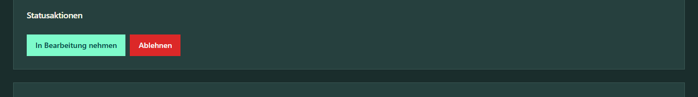
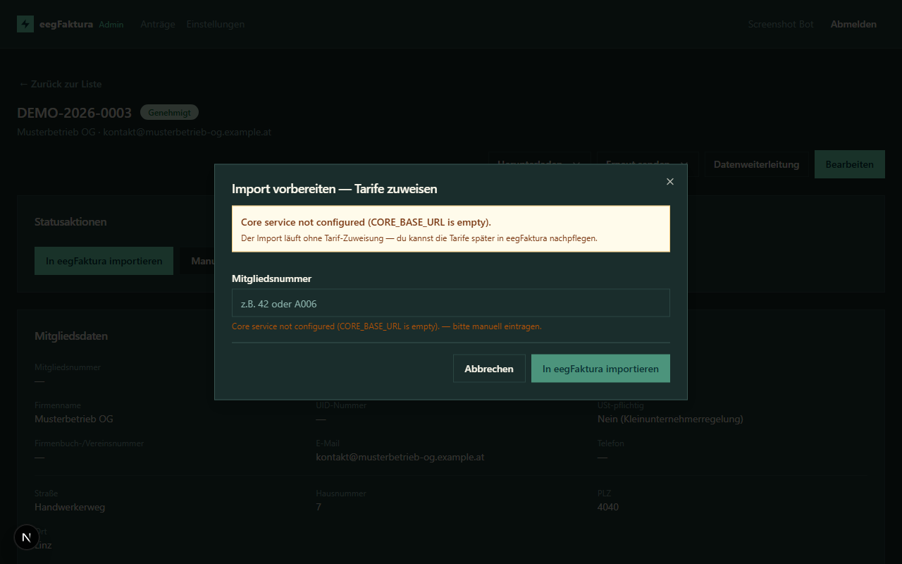
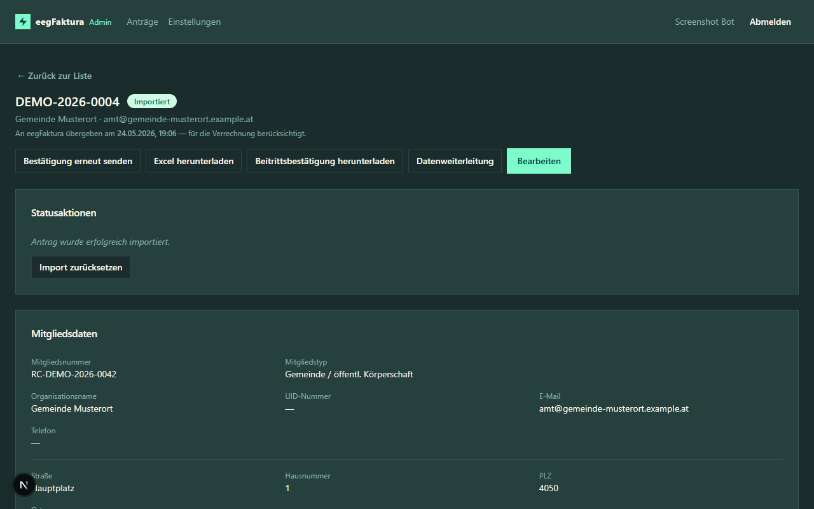
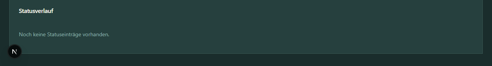

Statusverwaltung¶
Statusübergänge¶
Der Status eines Antrags steuert den Bearbeitungsablauf. Das Diagramm zeigt die wichtigsten Übergänge für den Bearbeitungsalltag — die zwei-Phasen-Übersicht (Review + Post-Import) steht im Überblick.
stateDiagram-v2
direction LR
submitted --> under_review
under_review --> approved
approved --> imported: Millisek.
approved --> import_failed
import_failed --> approved: erneut versuchen
under_review --> needs_info: Rückfragen
needs_info --> submitted: Mitglied ergänzt
under_review --> rejected
imported --> ready_for_activation: auto (alle Einzugsarten)
ready_for_activation --> activated: Admin manuell ODER<br/>„Aktivierung im Core prüfen"
approved --> activated: Skip-Import<br/>(manuell aktivieren)
ready_for_activation --> approved: Import zurücksetzen
imported --> approved: Import zurücksetzenSkip-Import: Der direkte Weg
approved → activatedist ein Ausnahmefall — der Admin verwendet ihn, wenn das Mitglied im eegFaktura-Core bereits manuell angelegt/überschrieben wurde und der reguläre Import-Pfad übersprungen werden soll.
import_failed → approved: nach Fehlerbehebung kann der Import erneut versucht werden.importedist transient — der Server transitioniert sofort weiter (siehe Diagramm oben). Wenn ein Antrag inimported„hängen" bleibt, ist der Auto-Branch fehlgeschlagen → über Import zurücksetzen lösen.imported / ready_for_activation → approved: über die Aktion Import zurücksetzen (siehe unten). NICHT ausactivated— aktive Mitglieder müssen zuerst im Core deaktiviert werden.
Status ändern¶
In der Detailansicht eines Antrags findest du den Bereich Status-Aktionen.

Klicke auf die gewünschte Aktion. Je nach aktuellem Status stehen unterschiedliche Aktionen zur Verfügung:
| Aktueller Status | Mögliche Aktionen |
|---|---|
submitted |
In Bearbeitung nehmen, Ablehnen (bei aktiver E-Mail-Bestätigung nur „Ablehnen", bis das Mitglied bestätigt) |
email_confirmed |
In Bearbeitung nehmen, Rückfragen stellen, Ablehnen |
under_review |
Genehmigen, Rückfragen stellen, Ablehnen |
needs_info |
— (wartet auf Ergänzung durch das Mitglied) |
approved |
Import starten |
import_failed |
Import erneut starten |
imported |
Import zurücksetzen (nur sichtbar wenn Auto-Transition fehlgeschlagen) |
ready_for_activation |
Als aktiv markieren, Zurück in Bearbeitung, Import zurücksetzen (oder via Batch-Button „Aktivierung im Core prüfen" in der Liste) |
activated |
— (Endzustand, keine Aktionen möglich) |
Bei approved gibt es zwei Buttons: „In eegFaktura importieren" (Standard) und „Manuell aktivieren …" (Ausnahmefall — überspringt den Import, falls das Mitglied im Faktura bereits manuell überschrieben wurde; siehe unten).
Zusätzlich verfügbar in allen Review-Stati (submitted / email_confirmed / under_review / needs_info) für Admins mit Zugriff auf ≥ 2 EEGs:
| Aktion | Wirkung |
|---|---|
| EEG umzuordnen | Verschiebt den Antrag in eine andere EEG (siehe Abschnitt unten) |
E-Mail-Bestätigung (email_confirmed)¶
Wenn in den EEG-Einstellungen „E-Mail-Adresse bestätigen" aktiviert ist, erscheinen neue Anträge zunächst im Status submitted mit dem Hinweis „E-Mail-Adresse noch nicht bestätigt". Solange der Bewerber den Link in der Bestätigungs-Mail nicht angeklickt hat, ist der einzig verfügbare Status-Schritt „Ablehnen" (für offensichtlichen Spam).
Sobald der Bewerber klickt:
- Status wechselt automatisch auf
email_confirmed - Du erhältst die EEG-Benachrichtigungs-Mail mit den Antragsdaten
- Alle normalen Status-Aktionen (In Bearbeitung nehmen, Rückfragen, Genehmigen, Ablehnen) sind ab jetzt verfügbar
Bestätigungs-Link erneut senden: Sollte das Mitglied den Link nicht finden (z. B. Spam-Ordner), nutze in der Detail-Seite oben rechts „Bestätigungs-Link erneut senden". Das generiert ein neues Token; der alte Link wird ungültig. Min. 5 Minuten Wartezeit zwischen zwei Sendungen.
Automatische Ablehnung: Anträge, deren Bestätigung 30 Tage lang ausbleibt, werden vom System automatisch auf rejected gesetzt mit dem Grund „E-Mail-Bestätigung ausgeblieben (Auto-Reject nach 30 Tagen)".
In Bearbeitung nehmen (under_review)¶
Nimm einen eingereichten Antrag in Bearbeitung, um anzuzeigen, dass du ihn aktiv bearbeitest. Dies ist optional, hilft aber wenn mehrere Admins auf dieselbe EEG arbeiten.
Rückfragen stellen (needs_info)¶
Wenn Angaben fehlen oder unklar sind:
- Klicke auf Rückfragen stellen
- Gib den Grund / die Rückfrage ein — der blaue Hinweis im Dialog erinnert daran: „Der hier eingegebene Text wird per E-Mail an den Beitrittswerber übermittelt"
- Das Mitglied erhält eine E-Mail mit deiner Rückfrage 1:1 im Body und kann seinen Antrag ergänzen
- Hard-Fail (ab 2026-05-17): scheitert der SMTP-Versand, wird der Statuswechsel zurückgerollt und du siehst die Fehlermeldung direkt im Dialog. Status bleibt unverändert, du kannst nach SMTP-Recovery erneut klicken
Nach der Ergänzung durch das Mitglied wechselt der Status automatisch zurück auf submitted.
Hinweis zum Mail-Footer (seit 2026-05-18): Der Footer in den Member-Mails (Eingangsbestätigung, Rückfragen, Ablehnung) verweist auf die EEG-Kontakt-E-Mail als
mailto:-Link statt der bisherigen Postadresse. Antworten gehen weiter direkt an deine EEG (Reply-To bleibt unverändert) — der Link ist nur eine zusätzliche Komfort-Option für Mitglieder, die nicht via Antwort sondern via neue Mail kontaktieren wollen.
Genehmigen (approved)¶
Wenn alle Angaben korrekt und vollständig sind:
- Klicke auf Genehmigen
- Der Antrag wechselt auf
approvedund ist bereit für den Import in eegFaktura
Ablehnen (rejected)¶
Wenn ein Antrag nicht genehmigt werden kann:
- Klicke auf Ablehnen
- Gib einen Ablehnungsgrund an — der blaue Hinweis im Dialog erinnert daran: „Die hier eingegebene Begründung wird per E-Mail an den Beitrittswerber übermittelt"
- Das Mitglied erhält eine E-Mail mit deiner Begründung 1:1 im Body
- Hard-Fail: gleiches Verhalten wie bei Rückfragen — Mail-Fehler rollt den Statuswechsel zurück
Import in eegFaktura¶
Nach der Genehmigung kann der Antrag in eegFaktura importiert werden:
- Öffne den genehmigten Antrag
- Klicke auf In eegFaktura importieren
- Es öffnet sich der Dialog Import-Konfiguration:
- Tarif — Auswahl aus den im eegFaktura-Core hinterlegten Tarifen der EEG
- Mitgliedsnummer — Vorbelegt mit der nächsten freien Nummer (basierend auf dem dominanten Muster in eegFaktura, z. B.
A005 → A006oder12 → 13). Maximal 50 Zeichen, alphanumerisch erlaubt. Du kannst den Vorschlag übernehmen oder überschreiben. - Klicke auf Importieren
- Bei Erfolg wechselt der Status auf
imported - Bei Fehler wechselt der Status auf
import_failed— der Import kann wiederholt werden (Mitgliedsnummer und Tarif werden erneut abgefragt)

Hinweis: Die Mitgliedsnummer wird erst beim Import vergeben. Im Status
submitted/under_review/approvedist sie noch leer — das ist beabsichtigt, weil nur eegFaktura die endgültige Nummernvergabe steuert.Hinweis: Der Import kann bei technischen Problemen mit eegFaktura fehlschlagen. In diesem Fall prüfe den Fehlerhinweis und wiederhole den Import, sobald das Problem behoben ist.
Hängengebliebener Import¶
Wenn ein Import-Versuch nicht sauber abschließt — z.B. weil eine Datenbank-Eindeutigkeitsverletzung den Bookkeeping-Schritt nach dem Core-Aufruf scheitern lässt, oder weil das Onboarding-Backend mitten im Import abstürzt — bleibt der Antrag im Status approved, kann aber nicht erneut importiert werden (das System meldet 409 „Import läuft bereits").
In diesem Fall erscheint im Antrags-Detail ein oranger Banner mit zwei Recovery-Aktionen:
- „Als importiert markieren" — wenn der Teilnehmer im Core trotzdem angelegt wurde (im eegFaktura-Core nachschauen, Teilnehmer-UUID und vergebene Mitgliedsnummer notieren). Trage beides im Dialog ein; der Antrag wechselt sauber auf
imported. - „Import-Lock räumen (Retry)" — wenn du sicher bist, dass im Core kein Teilnehmer angelegt wurde (oder du ihn vorher manuell gelöscht hast). Setzt den Lock zurück, der Antrag bleibt auf
approved, ein erneuter Import wird möglich. Achtung: Bei vorhandenem Core-Teilnehmer entsteht beim Retry ein Duplikat.
Der Banner erscheint automatisch, sobald der Import-Versuch älter als 2 Minuten ist und nicht sauber abgeschlossen wurde — du musst nicht raten, ob „nochmal probieren" sicher ist.
Import zurücksetzen (imported / ready_for_activation → approved)¶

Wenn ein bereits importierter Teilnehmer im eegFaktura-Core gelöscht wurde (z. B. weil das Mitglied seine Teilnahme widerrufen hat oder der Import fehlerhaft war), kann der Antrag in den Status approved zurückgesetzt werden, um einen Neu-Import zu ermöglichen.
- Öffne den Antrag (Status
importedoderready_for_activation) - Klicke auf Import zurücksetzen
- Gib eine Begründung an (Pflichtfeld, wird im Statusverlauf protokolliert)
- Der Antrag wechselt auf
approved; die altetarget_participant_id, die Mitgliedsnummer, Mandatsreferenz, Mandatsdatum und alle Audit-Timestamps werden geleert und im Statusverlauf archiviert
Wichtig: Diese Aktion kontaktiert den eegFaktura-Core nicht. Bevor du sie nutzt, musst du den Teilnehmer im Core manuell gelöscht haben.
Endzustand
activatednicht resetbar: ein aktives Mitglied muss zuerst im eegFaktura-Core deaktiviert werden — das Onboarding entfernt es nicht still.
Post-Import-Stati¶
Nach erfolgreichem Import wechselt der Antrag automatisch auf ready_for_activation — unabhängig von der Einzugsart. Den früheren Zwischenstop „Warte auf Bank-Bestätigung" für B2B-Anträge gibt es nicht mehr; die spätere SEPA-B2B-Umstellung im eegFaktura-Core nach der Hausbank-Bestätigung passiert dort manuell und ohne Eingriff im Onboarding.
Hinweis (seit 2026-05-18): Beide SEPA-Mandate (Basislastschrift CORE und B2B-Firmenlastschrift) zeigen im Unterschriftsfeld jetzt das Datum der Übermittlung als vorbefülltes „Datum". Das Mitglied trägt nur noch Ort + Unterschrift ein. Das gleiche Datum wird im Antrags-Detail unter „Mandatsdatum" angezeigt und beim Faktura-Import als Mandate-Date mitgeführt.
Bugfix 2026-05-28: bisher landeten Mandatsreferenz (= Mitgliedsnummer) und Mandatsdatum bei den at-import-Mandat-Flows (B2B-Firmenlastschrift und CORE mit Option „Mandat bei Import") nur lokal im Onboarding und im PDF, nicht aber im eegFaktura-Core. Admins mussten beide Werte nach jedem Import händisch im Core nachtragen. Jetzt setzt der Import beide Felder VOR dem Core-POST und sendet sie im
accountInfo-Block mit. Bestandsanträge VOR dem Fix tragen die Werte weiterhin nur lokal — entweder per „Import zurücksetzen + neu importieren" überschreiben oder einmalig manuell im Core ergänzen.
ready_for_activation — bereit zur Aktivierung in der EEG¶
Das Mitglied ist im eegFaktura-Core angelegt und wartet darauf, vom Core-Team aktiviert zu werden.
Zwei Wege zur Aktivierung:
1. Per Antrag manuell — Klick auf „Als aktiv markieren" im Detail. Setzt den Status auf activated und stempelt activated_at = NOW().
2. Per Batch im Core prüfen — Klick auf „Aktivierung im Core prüfen" in der Antragsübersicht (siehe Datei 04-admin-applications.md). Iteriert alle eigenen ready_for_activation-Anträge, fragt pro Tenant einmal beim Core nach (GET /participant), und transitioniert diejenigen Anträge automatisch auf activated, deren EDA-Kriterium erfüllt ist.
Welches EDA-Kriterium der Batch anwendet, ist pro EEG konfigurierbar:
- Variante A (Default, participant_active): der Teilnehmer im Core hat den Status ACTIVE.
- Variante B (any_meter_registration_started): mindestens ein Zählpunkt im Core hat den processState in PENDING/APPROVED/ACTIVE — sprich der Netzbetreiber hat auf die Online-Registrierung mindestens geantwortet. Damit aktivieren EEGs schon dann, wenn die EDA-Anmeldung läuft, ohne auf den Abschluss zu warten.
Umschalten in den EEG-Einstellungen unter „Aktivierungs-Kriterium" (siehe 06-admin-settings.md).
In beiden Fällen erhält das Mitglied beim Wechsel auf activated die volle Beitrittsbestätigungs-Mail mit PDF.
activated — Endzustand¶
Aktives Mitglied. Kein Reset, keine Rückwärts-Übergänge — die Daten-Pflege findet jetzt im eegFaktura-Kernsystem statt. Im Antrags-Detail stehen zwei Aktionen zur Verfügung, um die Onboarding-Kopie konsistent zu halten:
Stammdaten aus eegFaktura abgleichen¶
Der Knopf „Stammdaten aus eegFaktura abgleichen" pullt den aktuellen Mitglieder-Datensatz aus dem Kernsystem und überschreibt in der Onboarding-Datenbank die Felder, in denen das Kernsystem inzwischen einen anderen Wert hält.
Abgeglichen werden:
- Vorname, Nachname, Titel (vor und nach), UID-Nummer
- Wohnort-Adresse (Straße, Hausnummer, PLZ, Ort)
- E-Mail-Adresse, Telefon
- IBAN, Kontoinhaber, Bankname
Nicht abgeglichen werden:
- Mitgliedstyp, Geburtsdatum, Beitrittsdatum
- Zählpunkte (die werden im Kernsystem eigenständig gepflegt)
- Anteile-Anzahl
- Status, Mandat-Felder, Einzugsart
Klick-Flow:
- Klick auf „Stammdaten aus eegFaktura abgleichen". Der Knopf zeigt während des Abgleichs „Wird abgeglichen…".
- Wenn nichts unterschiedlich ist: Toast „Stammdaten sind bereits synchron".
- Wenn Felder unterschiedlich sind: Antrags-Detail wird sofort neu geladen mit den neuen Werten. Ein Toast bleibt 8 Sekunden sichtbar und nennt die geänderten Felder (z. B. „geänderte Felder: Telefon, PLZ (Wohnort), IBAN").
- Im Status-Verlauf erscheint ein neuer Eintrag „Stammdaten aus eegFaktura abgeglichen (geänderte Felder: …)".
Wenn ein Antrag manuell aktiviert wurde (ohne Import): der Knopf ist ausgegraut mit Hinweis „Antrag wurde manuell aktiviert ohne Import — kein Faktura-Mitgliederlink, Abgleich nicht möglich".
SEPA-Mandat erneut senden¶
Wenn der Abgleich eine geänderte IBAN oder einen geänderten Kontoinhaber-Namen erkannt hat, ist das bestehende SEPA-Mandat rechtlich nicht mehr gültig für die neue Bankverbindung — ein neues Mandat muss vom Mitglied unterschrieben werden, bevor Lastschriften auf das neue Konto eingezogen werden dürfen.
Der Knopf „SEPA-Mandat erneut senden" generiert ein frisches Mandat-PDF mit der aktuell hinterlegten IBAN und versendet es an die Mitgliedsadresse. Subject und Wortlaut der Mail sind auf den Renewal-Kontext zugeschnitten („deine Bankverbindung wurde aktualisiert, hiermit erhältst du ein neues SEPA-Mandat-Formular").
Klick-Flow:
- Klick auf „SEPA-Mandat erneut senden". Der Knopf zeigt „Mandat wird versandt…".
- Bei Erfolg: Toast „SEPA-Mandat-Mail an Mitglied versandt". Im Status-Verlauf erscheint „SEPA-Mandat-Mail erneut versandt".
- Bei Mail-Fehler: roter Toast „Mandat-Mail-Versand fehlgeschlagen — bitte später erneut versuchen". Der Status-Verlauf bleibt leer (kein Eintrag bei Fehler).
Wann benutzen?
- Nach einem Abgleich, der eine geänderte IBAN oder einen geänderten Kontoinhaber gemeldet hat.
- Wenn das Mitglied das Original-Mandat verloren hat und eine neue Kopie braucht.
Der Knopf ist nur sichtbar, wenn das Mitglied SEPA-Einzug nutzt (Basislastschrift oder B2B-Firmenlastschrift). Bei Kein SEPA-Verfahren erscheint der Knopf nicht.
Ausnahmefall: approved → activated (manueller Skip-Import)¶
In seltenen Fällen existiert das Mitglied im eegFaktura-Core bereits (etwa weil ein altes Mitglied seinen Antrag erneuert hat — Faktura erlaubt kein Löschen von Mitgliedern). Wenn du das Core-Mitglied dort manuell mit den Onboarding-Daten überschrieben hast, fehlt im Onboarding noch der Statuswechsel.
Im Detail einer approved-Anwendung erscheint dafür neben „In eegFaktura importieren" ein zweiter Button „Manuell aktivieren …":
- Klick öffnet einen Dialog mit Warnhinweis „Nur verwenden, wenn das Mitglied im eegFaktura bereits manuell überschrieben wurde".
- Pflichtfeld Mitgliedsnummer — die im Faktura hinterlegte Nummer wird auf die Beitrittsbestätigung gedruckt.
- Bestätigen → der Antrag wechselt direkt von
approvedaufactivated. Der Import in den Core wird übersprungen. Es geht dieselbe Beitrittsbestätigungs-Mail mit PDF raus wie beim regulären Pfad.
Der Status-Log enthält den Eintrag „manuell aktiviert (Core-Member bereits vorhanden, Import übersprungen)" mit der gesetzten Mitgliedsnummer.
EEG umzuordnen¶
Wenn ein Mitglied über den falschen RC-Link der EEG A registriert hat, aber eigentlich zur EEG B gehört (z. B. weil das Versorgungsgebiet woanders hingehört), kann der Antrag direkt umzuordnen werden — ohne dass das Mitglied neu einreichen muss.
Verfügbarkeit: der Button „EEG umzuordnen" erscheint im Status-Aktionen-Block nur, wenn:
- der Status submitted, email_confirmed, under_review oder needs_info ist (nicht bei approved / imported / rejected)
- du als Admin Zugriff auf mindestens 2 EEGs hast
Ablauf:
- Klicke auf EEG umzuordnen
- Wähle die Ziel-EEG aus dem Dropdown (deine Tenants außer der aktuellen). Das Dropdown zeigt — sobald die Stammdaten synchronisiert wurden — die EEGs im Format
Kurzform • RC-Nummer(z. B.EEG-Test • RC0001); EEGs ohne hinterlegte Kurzform erscheinen am Ende der Liste mit reiner RC-Nummer. - Gib eine Begründung an (Pflichtfeld, mindestens 5 Zeichen)
- Bestätige mit Umzuordnen
Was passiert:
- Eine neue Referenznummer wird vom per-EEG-Counter der Ziel-EEG vergeben (Format <neue-RC>-<Jahr>-<NNNN>)
- Die alte Referenznummer und alte RC werden im Statusverlauf als [system] previous rc_number=… und [system] previous reference_number=… archiviert
- Der Status bleibt unverändert (kein Status-Wechsel)
- Der Antrag erscheint ab sofort in der Liste der Ziel-EEG, nicht mehr unter der alten EEG
- Es wird keine E-Mail an das Mitglied verschickt — die nächste Status-Mail (Rückfrage / Ablehnung / Zustimmung) kommt automatisch von der neuen EEG
Wichtig: Cooperative-Shares, Konfigurierbare-Felder und die E-Mail-Bestätigungs-Pflicht werden nicht re-validiert. Wenn die Ziel-EEG andere Pflichtfelder hat, nutze nach dem Umzuordnen ggf. Rückfragen stellen, um fehlende Daten nachzufordern.
Statusverlauf¶
Jede Statusänderung wird automatisch im Statusverlauf protokolliert:
- Zeitpunkt der Änderung (Anzeige in Europe/Vienna mit CET/CEST-Umstellung)
- Von-Status und An-Status
- Benutzer der die Änderung vorgenommen hat
- Optionaler Grund (bei Rückfragen, Ablehnung und Import-Reset)
